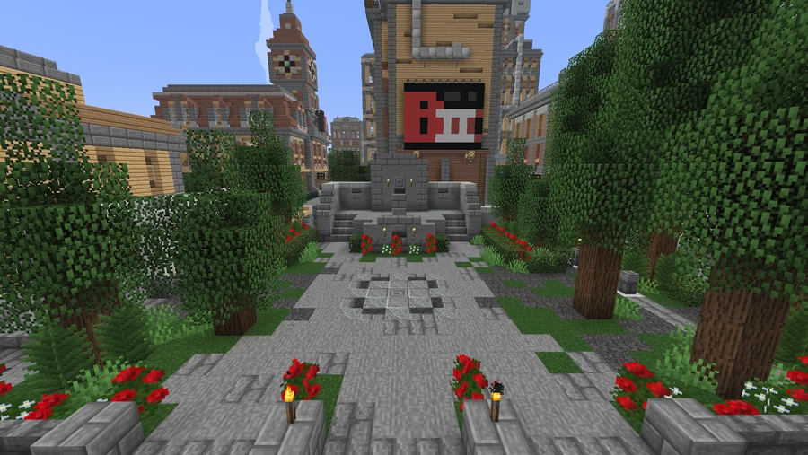
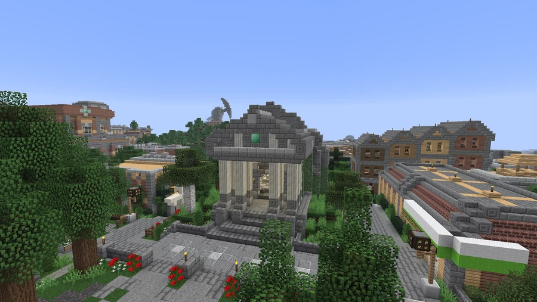

Broville Memorial Pantheon
A civic memorial recorded in the city’s landmark inventory.
Square and location
Broville Memorial Pantheon Square stands on the edge of Downtown, near City Hall. The complex is recorded as one of the city's monumental landmarks.
Political life and memory
The square hosts the traditional mayoral address, which the community description presents as being broadcast by every television station in the city. It also serves as the setting for political demonstrations.
It contains the Monument dedicated to the builders everywhere, honoring builders everywhere. The monument is described as a symbol that has resonated with several generations of residents. The tradition associating monumental symbols with the Broviet Union has its own context and does not replace the square's documented civic function.
Gallery






See also
Sources and references
- v11.4.4 maps, signs, books and items World records
- Broville Memorial Pantheon · Broville Wiki Community archive
Text adapted and expanded from Broville Memorial Pantheon (contributors and history, revision 5149). Adapted text is available under CC BY-SA 3.0.